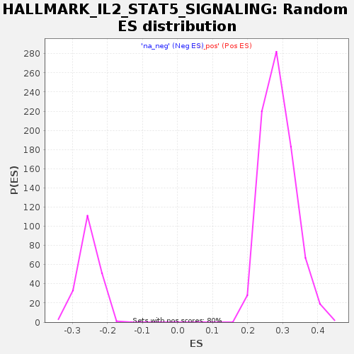

| | | Dataset | GSE18198_cov_collapsed |
| Phenotype | NoPhenotypeAvailable |
| Upregulated in class | na_neg |
| GeneSet | HALLMARK_IL2_STAT5_SIGNALING |
| Enrichment Score (ES) | -0.40673277 |
| Normalized Enrichment Score (NES) | -1.6026194 |
| Nominal p-value | 0.0 |
| FDR q-value | 0.00638481 |
| FWER p-Value | 0.025 |
Table: GSEA Results Summary
 Fig 1: Enrichment plot: HALLMARK_IL2_STAT5_SIGNALING
Fig 1: Enrichment plot: HALLMARK_IL2_STAT5_SIGNALING
Profile of the Running ES Score & Positions of GeneSet Members on the Rank Ordered List
| SYMBOL | TITLE | RANK IN GENE LIST | RANK METRIC SCORE | RUNNING ES | CORE ENRICHMENT | | 1 | LTB | NA | 2 | 2.837 | 0.0337 | No |
| 2 | MYO1C | NA | 97 | 1.727 | 0.0497 | No |
| 3 | SPP1 | NA | 341 | 1.197 | 0.0522 | No |
| 4 | HIPK2 | NA | 442 | 1.106 | 0.0606 | No |
| 5 | RABGAP1L | NA | 680 | 0.927 | 0.0602 | No |
| 6 | ETFBKMT | NA | 691 | 0.923 | 0.0707 | No |
| 7 | ETV4 | NA | 715 | 0.915 | 0.0805 | No |
| 8 | BCL2L1 | NA | 884 | 0.842 | 0.0824 | No |
| 9 | IL10RA | NA | 1035 | 0.790 | 0.0846 | No |
| 10 | RHOH | NA | 1204 | 0.731 | 0.0852 | No |
| 11 | GADD45B | NA | 1366 | 0.686 | 0.0856 | No |
| 12 | SERPINC1 | NA | 1652 | 0.620 | 0.0792 | No |
| 13 | NRP1 | NA | 1707 | 0.609 | 0.0839 | No |
| 14 | CDC42SE2 | NA | 1746 | 0.600 | 0.0892 | No |
| 15 | PENK | NA | 1766 | 0.595 | 0.0953 | No |
| 16 | SYT11 | NA | 1879 | 0.575 | 0.0968 | No |
| 17 | IL1RL1 | NA | 1897 | 0.572 | 0.1028 | No |
| 18 | TNFSF11 | NA | 1915 | 0.570 | 0.1087 | No |
| 19 | BMP2 | NA | 1940 | 0.567 | 0.1143 | No |
| 20 | EMP1 | NA | 1961 | 0.562 | 0.1201 | No |
| 21 | SELP | NA | 2169 | 0.535 | 0.1164 | No |
| 22 | PHTF2 | NA | 2219 | 0.529 | 0.1204 | No |
| 23 | NCS1 | NA | 2278 | 0.521 | 0.1238 | No |
| 24 | LRRC8C | NA | 2298 | 0.519 | 0.1291 | No |
| 25 | PLPP1 | NA | 2375 | 0.508 | 0.1314 | No |
| 26 | F2RL2 | NA | 2428 | 0.502 | 0.1349 | No |
| 27 | RGS16 | NA | 2439 | 0.500 | 0.1404 | No |
| 28 | CD44 | NA | 2698 | 0.466 | 0.1335 | No |
| 29 | TGM2 | NA | 2973 | 0.440 | 0.1255 | No |
| 30 | PLIN2 | NA | 2998 | 0.439 | 0.1296 | No |
| 31 | CCNE1 | NA | 3033 | 0.435 | 0.1331 | No |
| 32 | IFITM3 | NA | 3038 | 0.434 | 0.1381 | No |
| 33 | APLP1 | NA | 3093 | 0.427 | 0.1406 | No |
| 34 | ABCB1 | NA | 3343 | 0.401 | 0.1333 | No |
| 35 | POU2F1 | NA | 3354 | 0.400 | 0.1376 | No |
| 36 | IFNGR1 | NA | 3395 | 0.396 | 0.1404 | No |
| 37 | GUCY1B1 | NA | 3411 | 0.394 | 0.1444 | No |
| 38 | RHOB | NA | 3445 | 0.390 | 0.1474 | No |
| 39 | IRF6 | NA | 3759 | 0.364 | 0.1367 | No |
| 40 | SOCS2 | NA | 3780 | 0.363 | 0.1400 | No |
| 41 | P4HA1 | NA | 3870 | 0.356 | 0.1400 | No |
| 42 | CD86 | NA | 4056 | 0.338 | 0.1351 | No |
| 43 | PHLDA1 | NA | 4120 | 0.333 | 0.1360 | No |
| 44 | MAP3K8 | NA | 4451 | 0.308 | 0.1238 | No |
| 45 | CTLA4 | NA | 4583 | 0.300 | 0.1210 | No |
| 46 | ITGA6 | NA | 4714 | 0.290 | 0.1182 | No |
| 47 | SOCS1 | NA | 4738 | 0.288 | 0.1205 | No |
| 48 | SMPDL3A | NA | 4767 | 0.287 | 0.1226 | No |
| 49 | NFKBIZ | NA | 4983 | 0.271 | 0.1155 | No |
| 50 | CCND3 | NA | 5066 | 0.266 | 0.1147 | No |
| 51 | GABARAPL1 | NA | 5096 | 0.265 | 0.1164 | No |
| 52 | COL6A1 | NA | 5357 | 0.251 | 0.1069 | No |
| 53 | MAP6 | NA | 5538 | 0.241 | 0.1011 | No |
| 54 | ALCAM | NA | 5541 | 0.241 | 0.1038 | No |
| 55 | CDKN1C | NA | 5759 | 0.230 | 0.0961 | No |
| 56 | AMACR | NA | 6034 | 0.216 | 0.0855 | No |
| 57 | IRF4 | NA | 6156 | 0.208 | 0.0821 | No |
| 58 | ADAM19 | NA | 6268 | 0.203 | 0.0792 | No |
| 59 | TNFRSF1B | NA | 6495 | 0.192 | 0.0706 | No |
| 60 | NT5E | NA | 6503 | 0.192 | 0.0725 | No |
| 61 | LRIG1 | NA | 6583 | 0.188 | 0.0710 | No |
| 62 | NCOA3 | NA | 6946 | 0.174 | 0.0556 | No |
| 63 | AHNAK | NA | 7022 | 0.171 | 0.0540 | No |
| 64 | CCND2 | NA | 7298 | 0.160 | 0.0427 | No |
| 65 | MXD1 | NA | 7368 | 0.158 | 0.0412 | No |
| 66 | ENPP1 | NA | 7477 | 0.153 | 0.0378 | No |
| 67 | IL2RA | NA | 7518 | 0.152 | 0.0377 | No |
| 68 | CSF1 | NA | 7567 | 0.151 | 0.0372 | No |
| 69 | GPR83 | NA | 7580 | 0.150 | 0.0384 | No |
| 70 | CXCL10 | NA | 7844 | 0.140 | 0.0274 | No |
| 71 | CD83 | NA | 7851 | 0.140 | 0.0288 | No |
| 72 | HOPX | NA | 7864 | 0.139 | 0.0299 | No |
| 73 | TNFRSF9 | NA | 7915 | 0.137 | 0.0291 | No |
| 74 | WLS | NA | 8005 | 0.135 | 0.0264 | No |
| 75 | COCH | NA | 8075 | 0.132 | 0.0246 | No |
| 76 | XBP1 | NA | 8189 | 0.127 | 0.0207 | No |
| 77 | TWSG1 | NA | 8213 | 0.127 | 0.0211 | No |
| 78 | TNFRSF18 | NA | 8366 | 0.121 | 0.0152 | No |
| 79 | CTSZ | NA | 8390 | 0.120 | 0.0155 | No |
| 80 | IGF2R | NA | 8703 | 0.111 | 0.0018 | No |
| 81 | IGF1R | NA | 8780 | 0.108 | -0.0005 | No |
| 82 | TNFRSF4 | NA | 8823 | 0.107 | -0.0013 | No |
| 83 | AHR | NA | 8852 | 0.106 | -0.0014 | No |
| 84 | ITIH5 | NA | 8874 | 0.105 | -0.0011 | No |
| 85 | CASP3 | NA | 8919 | 0.104 | -0.0020 | No |
| 86 | RORA | NA | 9003 | 0.101 | -0.0048 | No |
| 87 | CD79B | NA | 9253 | 0.095 | -0.0157 | No |
| 88 | SERPINB6 | NA | 9259 | 0.095 | -0.0148 | No |
| 89 | TRAF1 | NA | 9366 | 0.092 | -0.0188 | No |
| 90 | BMPR2 | NA | 9373 | 0.091 | -0.0180 | No |
| 91 | HUWE1 | NA | 9506 | 0.087 | -0.0234 | No |
| 92 | MAPKAPK2 | NA | 9642 | 0.083 | -0.0289 | No |
| 93 | SNX9 | NA | 9787 | 0.079 | -0.0349 | No |
| 94 | CKAP4 | NA | 9901 | 0.076 | -0.0394 | No |
| 95 | CA2 | NA | 10166 | 0.068 | -0.0513 | No |
| 96 | GALM | NA | 10229 | 0.067 | -0.0535 | No |
| 97 | GBP4 | NA | 10241 | 0.066 | -0.0533 | No |
| 98 | SLC29A2 | NA | 10257 | 0.066 | -0.0532 | No |
| 99 | SPRY4 | NA | 10484 | 0.059 | -0.0634 | No |
| 100 | KLF6 | NA | 10786 | 0.052 | -0.0773 | No |
| 101 | FLT3LG | NA | 10798 | 0.051 | -0.0772 | No |
| 102 | ARL4A | NA | 11066 | 0.044 | -0.0896 | No |
| 103 | MUC1 | NA | 11151 | 0.042 | -0.0931 | No |
| 104 | SH3BGRL2 | NA | 11204 | 0.041 | -0.0951 | No |
| 105 | CDCP1 | NA | 11405 | 0.036 | -0.1043 | No |
| 106 | TIAM1 | NA | 11416 | 0.036 | -0.1044 | No |
| 107 | SHE | NA | 11695 | 0.030 | -0.1174 | No |
| 108 | FAM126B | NA | 11943 | 0.025 | -0.1290 | No |
| 109 | GATA1 | NA | 11954 | 0.024 | -0.1292 | No |
| 110 | RNH1 | NA | 12168 | 0.021 | -0.1393 | No |
| 111 | IL1R2 | NA | 12653 | 0.011 | -0.1625 | No |
| 112 | ENO3 | NA | 12701 | 0.010 | -0.1646 | No |
| 113 | AGER | NA | 12702 | 0.010 | -0.1645 | No |
| 114 | CSF2 | NA | 12870 | 0.006 | -0.1725 | No |
| 115 | ICOS | NA | 12874 | 0.006 | -0.1725 | No |
| 116 | TLR7 | NA | 13028 | 0.003 | -0.1799 | No |
| 117 | BCL2 | NA | 13279 | -0.002 | -0.1919 | No |
| 118 | CAPN3 | NA | 13598 | -0.008 | -0.2071 | No |
| 119 | GPX4 | NA | 13624 | -0.009 | -0.2082 | No |
| 120 | TTC39B | NA | 13734 | -0.011 | -0.2133 | No |
| 121 | PTCH1 | NA | 13899 | -0.015 | -0.2211 | No |
| 122 | MAFF | NA | 13925 | -0.015 | -0.2221 | No |
| 123 | IKZF2 | NA | 13935 | -0.015 | -0.2223 | No |
| 124 | DRC1 | NA | 14516 | -0.028 | -0.2500 | No |
| 125 | IL13 | NA | 14605 | -0.029 | -0.2539 | No |
| 126 | ANXA4 | NA | 14647 | -0.030 | -0.2555 | No |
| 127 | PTH1R | NA | 14911 | -0.038 | -0.2677 | No |
| 128 | LIF | NA | 15002 | -0.041 | -0.2715 | No |
| 129 | ITGAE | NA | 15137 | -0.045 | -0.2775 | No |
| 130 | SPRED2 | NA | 15172 | -0.046 | -0.2786 | No |
| 131 | SYNGR2 | NA | 15189 | -0.047 | -0.2788 | No |
| 132 | IL3RA | NA | 15232 | -0.049 | -0.2802 | No |
| 133 | ECM1 | NA | 15254 | -0.050 | -0.2806 | No |
| 134 | SNX14 | NA | 15646 | -0.065 | -0.2987 | No |
| 135 | CYFIP1 | NA | 15785 | -0.070 | -0.3045 | No |
| 136 | SCN9A | NA | 15861 | -0.075 | -0.3072 | No |
| 137 | LCLAT1 | NA | 15890 | -0.077 | -0.3077 | No |
| 138 | TNFRSF8 | NA | 15940 | -0.080 | -0.3091 | No |
| 139 | DCPS | NA | 16363 | -0.098 | -0.3282 | No |
| 140 | SLC39A8 | NA | 16382 | -0.099 | -0.3279 | No |
| 141 | FGL2 | NA | 16433 | -0.101 | -0.3291 | No |
| 142 | PLAGL1 | NA | 16437 | -0.101 | -0.3281 | No |
| 143 | CISH | NA | 16827 | -0.121 | -0.3454 | No |
| 144 | DHRS3 | NA | 17056 | -0.136 | -0.3548 | No |
| 145 | CD48 | NA | 17083 | -0.137 | -0.3544 | No |
| 146 | UMPS | NA | 17097 | -0.138 | -0.3534 | No |
| 147 | ST3GAL4 | NA | 17646 | -0.181 | -0.3776 | No |
| 148 | PLSCR1 | NA | 17653 | -0.182 | -0.3758 | No |
| 149 | GSTO1 | NA | 17714 | -0.187 | -0.3764 | No |
| 150 | GLIPR2 | NA | 17807 | -0.197 | -0.3785 | No |
| 151 | RRAGD | NA | 17915 | -0.206 | -0.3812 | No |
| 152 | FAH | NA | 18071 | -0.223 | -0.3860 | No |
| 153 | PIM1 | NA | 18221 | -0.239 | -0.3904 | No |
| 154 | SWAP70 | NA | 18240 | -0.240 | -0.3884 | No |
| 155 | CCR4 | NA | 18345 | -0.254 | -0.3904 | No |
| 156 | TNFRSF21 | NA | 18348 | -0.254 | -0.3874 | No |
| 157 | P2RX4 | NA | 18507 | -0.273 | -0.3918 | No |
| 158 | FURIN | NA | 18524 | -0.275 | -0.3893 | No |
| 159 | ITGAV | NA | 18754 | -0.310 | -0.3967 | No |
| 160 | PTGER2 | NA | 18793 | -0.317 | -0.3947 | No |
| 161 | IL10 | NA | 18860 | -0.330 | -0.3940 | No |
| 162 | MYO1E | NA | 18913 | -0.339 | -0.3924 | No |
| 163 | TNFSF10 | NA | 19017 | -0.361 | -0.3931 | No |
| 164 | DENND5A | NA | 19184 | -0.393 | -0.3964 | No |
| 165 | IKZF4 | NA | 19213 | -0.402 | -0.3930 | No |
| 166 | CAPG | NA | 19499 | -0.472 | -0.4011 | Yes |
| 167 | NDRG1 | NA | 19514 | -0.478 | -0.3961 | Yes |
| 168 | S100A1 | NA | 19517 | -0.478 | -0.3905 | Yes |
| 169 | BATF | NA | 19816 | -0.583 | -0.3979 | Yes |
| 170 | IL18R1 | NA | 19858 | -0.597 | -0.3928 | Yes |
| 171 | NFIL3 | NA | 19861 | -0.597 | -0.3858 | Yes |
| 172 | CD81 | NA | 19901 | -0.616 | -0.3803 | Yes |
| 173 | IL4R | NA | 19912 | -0.620 | -0.3734 | Yes |
| 174 | PRNP | NA | 19965 | -0.640 | -0.3683 | Yes |
| 175 | SELL | NA | 20034 | -0.680 | -0.3635 | Yes |
| 176 | PNP | NA | 20052 | -0.688 | -0.3561 | Yes |
| 177 | EEF1AKMT1 | NA | 20064 | -0.692 | -0.3484 | Yes |
| 178 | PLEC | NA | 20246 | -0.809 | -0.3475 | Yes |
| 179 | PRAF2 | NA | 20304 | -0.858 | -0.3401 | Yes |
| 180 | IRF8 | NA | 20358 | -0.900 | -0.3319 | Yes |
| 181 | PTRH2 | NA | 20382 | -0.923 | -0.3220 | Yes |
| 182 | EOMES | NA | 20424 | -0.963 | -0.3125 | Yes |
| 183 | AHCY | NA | 20503 | -1.052 | -0.3038 | Yes |
| 184 | IL2RB | NA | 20505 | -1.055 | -0.2913 | Yes |
| 185 | UCK2 | NA | 20508 | -1.056 | -0.2788 | Yes |
| 186 | GPR65 | NA | 20520 | -1.066 | -0.2667 | Yes |
| 187 | CST7 | NA | 20643 | -1.232 | -0.2579 | Yes |
| 188 | BATF3 | NA | 20666 | -1.275 | -0.2438 | Yes |
| 189 | SLC2A3 | NA | 20700 | -1.332 | -0.2295 | Yes |
| 190 | ODC1 | NA | 20710 | -1.371 | -0.2136 | Yes |
| 191 | SLC1A5 | NA | 20732 | -1.406 | -0.1979 | Yes |
| 192 | BHLHE40 | NA | 20817 | -1.645 | -0.1824 | Yes |
| 193 | NOP2 | NA | 20827 | -1.701 | -0.1626 | Yes |
| 194 | CDC6 | NA | 20838 | -1.785 | -0.1418 | Yes |
| 195 | PUS1 | NA | 20841 | -1.804 | -0.1204 | Yes |
| 196 | HK2 | NA | 20887 | -2.117 | -0.0974 | Yes |
| 197 | PDCD2L | NA | 20904 | -2.265 | -0.0712 | Yes |
| 198 | PRKCH | NA | 20907 | -2.274 | -0.0442 | Yes |
| 199 | MYC | NA | 20944 | -3.875 | 0.0001 | Yes |
Table: GSEA details [plain text format]

Fig 2: HALLMARK_IL2_STAT5_SIGNALING: Random ES distribution
Gene set null distribution of ES for HALLMARK_IL2_STAT5_SIGNALING